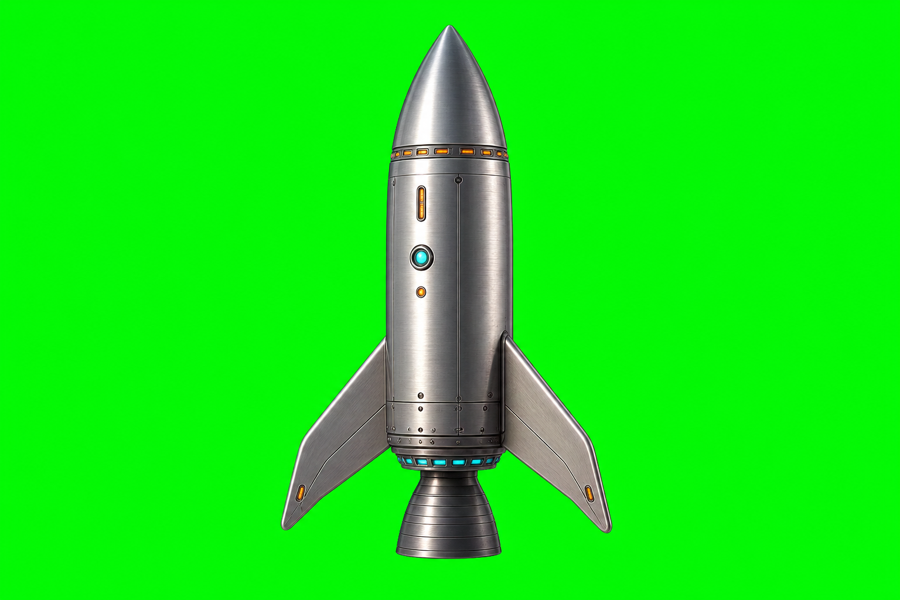

constant optimal
02 · Run the burn
Energy released 0%
Same total budget ✓
constant optimal
Exhaust velocity schedule
Inspect Mike's derivation
Fixed energy budget
Re(mi−mf) = ∫ ½ve²(m) dm
Both schedules receive exactly the same idealized energy.
Optimal schedule
ve(m) = k/m, k = √(2Remimf)
The optimal exhaust velocity rises as the spacecraft gets lighter.
Final comparison
Δvopt = (mi−mf)√(2Re/(mimf))
Only the mass ratio controls the gain over constant exhaust.
What this instrument assumes
- One-dimensional, non-relativistic motion.
- No gravity, drag, structural mass changes, or conversion losses.
- Energy can be stored and reassigned between parcels of reaction mass without penalty.
- The result is an ideal upper-bound comparison—not an engine design.
Live construction wake
Reality Check
This preview exposes its unfinished edges. A green result is tested; amber remains open; blue awaits human contact.
Core equations
Analytical endpoints, monotonicity, and the gain-factor identity pass automated checks.
Energy storage is magic
The optimal curve assumes lossless, massless storage with unlimited power. A real constraint model is not yet present.
Browser behavior
Desktop and phone renders, presets, slider updates, URL restoration, and the page-error channel passed in Chromium.
Authorship and direction
This is an unofficial interpretation. Mike has not reviewed its voice, mathematics, interaction, or publication course.
Wake last recorded: 2026-07-29 UTC · Reverie Version 1

Optional 3D sidecar · Manual Tripo bridge
Carry this rocket through Tripo
The Captain prepared a clean source plate, but Tripo currently needs an authenticated human operator. The 2D laboratory does not depend on this step.
- Download the source image.
- In Tripo, choose Image to 3D, textured, static, standard or high quality.
- Export the result as GLB.
- Save it under
/home/cgland give the Captain its path.
{kind=link}
Source SHA-256: 3c7e5706…467b596a · No Tripo model has been claimed yet.